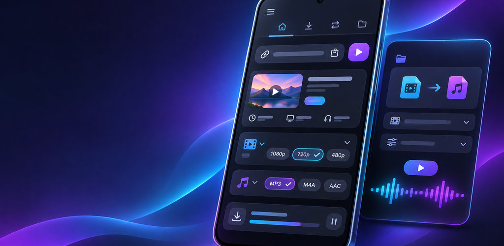
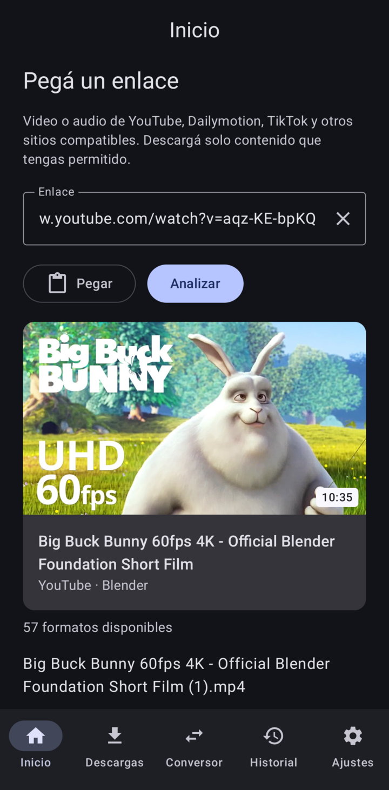
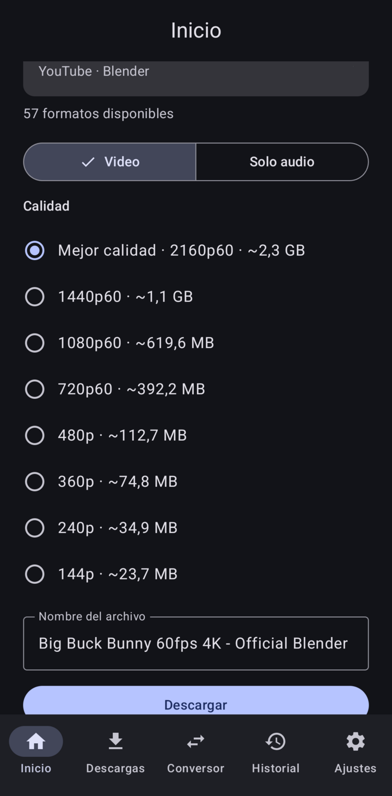
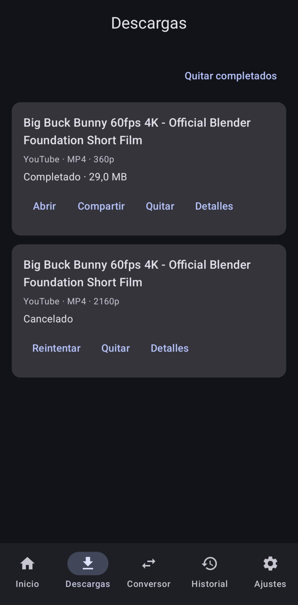
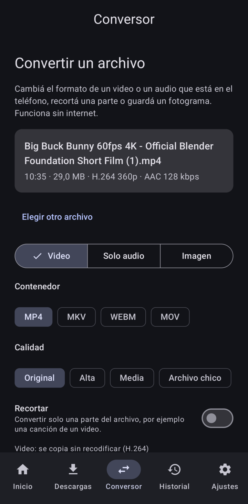
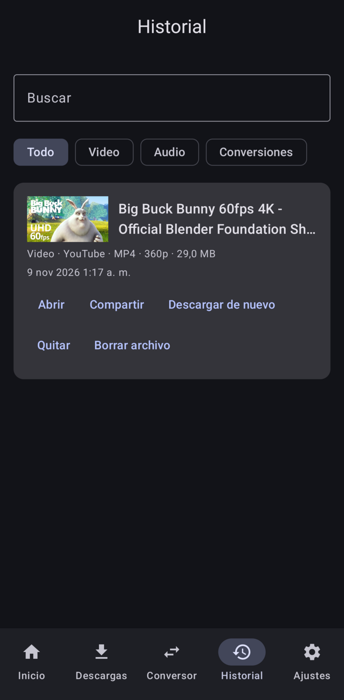
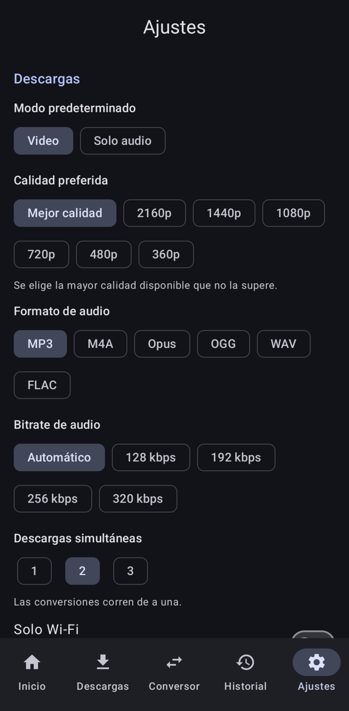

Descargá y convertí multimedia, en tu teléfono.
MediaForge guarda video y audio de los sitios que usás, y convierte tus propios archivos. Todo corre en el teléfono: sin servidores, sin cuentas, sin anuncios.

Qué hace
MediaForge muestra los formatos que de verdad ofrece cada sitio, con su tamaño, para que elijas antes de descargar. Después guarda el archivo donde quieras.
Video en la calidad que elijas
De 144p a 4K, en MP4. Pegá un enlace o compartilo desde cualquier app.
Solo audio
MP3, M4A, Opus, OGG, WAV o FLAC, con título, artista y portada. Sin recodificar cuando se puede.
Conversor sin internet
Cambiá el formato, recortá un fragmento, guardá un fotograma como imagen, comprimí un video o convertí hasta 50 archivos a la vez.
Subtítulos y listas
Incrustá subtítulos en el video. Elegí videos de una lista pública y bajalos todos.
Cola en segundo plano
Progreso real, cancelar, reintentos automáticos y opción "Solo Wi‑Fi". Un historial con búsqueda de todo lo que guardaste.
Privada y al día
Sin analítica ni servicios de Google. El motor de descargas se actualiza solo, verificado por firma.
Capturas
Pantallas reales de la versión 1.0.0.






Instalar
- Descargá app-arm64-v8a-release.apk en el teléfono. Para Chromebooks y equipos x86, bajá el APK
x86_64desde la página del release. - Abrilo. Android pide permitir instalar apps desde el navegador o el administrador de archivos.
- La primera vez, la app descomprime su motor (unos 240 MB); tarda unos segundos.
Para comprobar que el APK es el original, comparalo con SHA256SUMS del release. Certificado de firma (SHA-256):
69:EE:90:B0:22:F6:9E:59:D9:0F:6A:B3:AE:07:FA:96:87:75:43:39:88:66:67:8B:FB:33:47:E5:BC:1F:32:1A
Requisitos
- Android 8.0 o posterior
- Un teléfono arm64 (casi todos) o un equipo x86_64
- Unos 400 MB libres
Sitios probados
YouTube, Dailymotion y TikTok. Otros sitios que soporta yt-dlp pueden funcionar.
Hecha con
Arquitectura limpia con un dominio en Kotlin puro, una cola de trabajos en segundo plano y motores nativos que corren como procesos. Con pruebas unitarias y en el teléfono. Ver la guía de desarrollo (en inglés).
Aviso legal
Usala para contenido que tengas permitido descargar: contenido propio, de dominio público, o que la plataforma y los titulares de los derechos permitan guardar. MediaForge no elude DRM, muros de pago, inicios de sesión ni otros controles de acceso, y no quita marcas de agua. Sos responsable del uso que le des.
Licencias: MediaForge es software libre bajo la GNU GPL v3.0. Incluye yt-dlp (Unlicense), Python (PSF), QuickJS (MIT) y FFmpeg con componentes GPL, entre unas 140 bibliotecas. Sus avisos están en la app (Ajustes → Licencias de código abierto) y en LICENSES.md. Cada release incluye el código fuente de los componentes GPL, LGPL y MPL.
Privacidad: la app no tiene cuentas, analítica ni anuncios. Solo se conecta a los sitios que le pedís, y a GitHub para actualizar su motor de descargas.